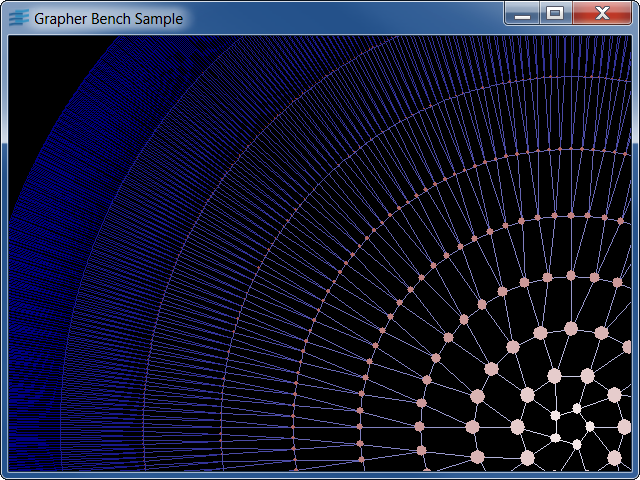

benchgrThis sample demonstrates the grapher library ability to handle huge graphs.

This sample builds a huge graph made of concentric nodes.
You can specify the number of circles with an optional parameter to the benchgr
program (the default value is 10). Each ring contains twice as much nodes
as the previous inner ring. Each ring node is connected to two nodes
of the next outer ring. A subclass of IlvLinkImage is used for the
links. This class computes the endpoints of the straight link so that it joins the
centers of the nodes.
You can use the standard grapher accelerators to zoom or scroll. You can also select
and move nodes.
IlvGrapherIlvLinkImageIlvGraphSelectInteractor